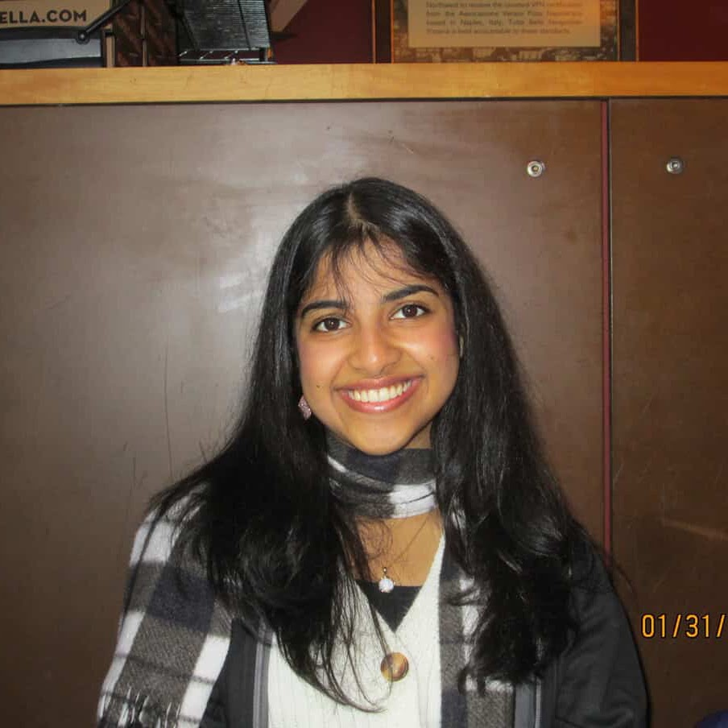

Nidhi Parthasarathy
High School Student - Avid coder, dancer
About Me
Hi, my name is Nidhi, and I'm a CS student at the University of Washington. I'm interested in applied AI and its applications for societal good, and I've worked on several research and applied projects in this space.
I’ve previously worked on AI for health projects at Stanford and MIT, applying machine learning to tasks like disease classification and stem cell prediction. More recently, I’ve been researching how to use large language models and cognitively informed design to support student learning.
One of my projects is an AI-assisted journalism system that simulates the reporting and writing process to help students develop core journalistic skills, using a system 1 / system 2 architecture for feedback and interaction. In parallel, I've worked on systems that help students learn how to think like experts by modeling expert behavior and generating dynamic UI scaffolds using approaches like inverse planning.
Across these projects, I'm especially interested in building applied AI systems that are interpretable, pedagogically grounded, and support human reasoning rather than replace it.
Outside of tech, I've been training in classical Indian dance for many years and am part of UW's classical dance team.